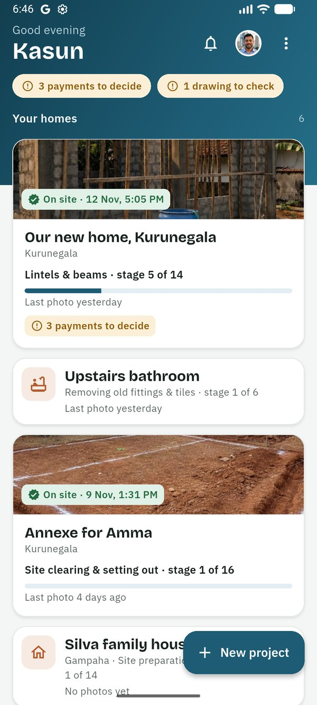
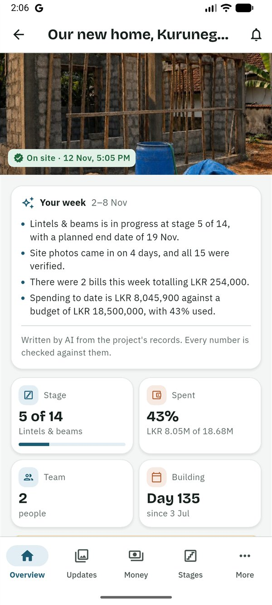
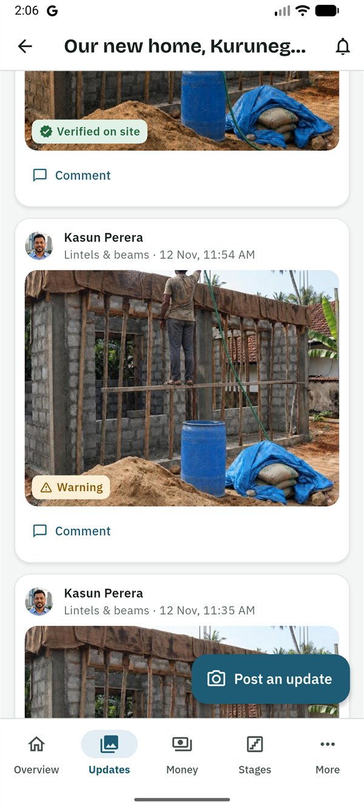
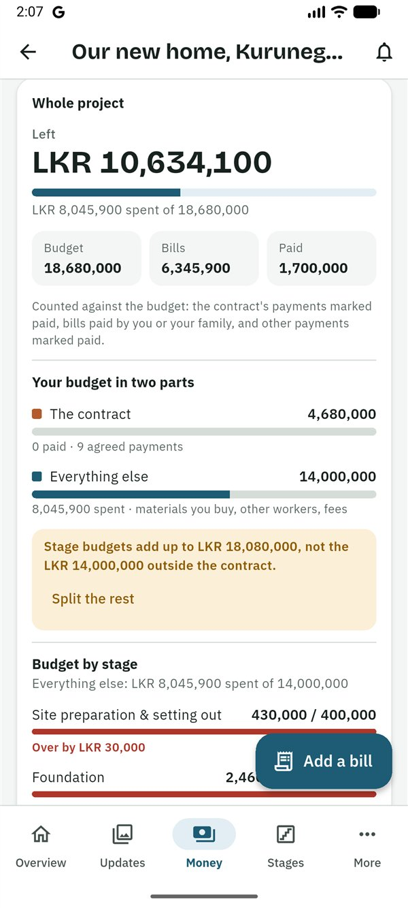
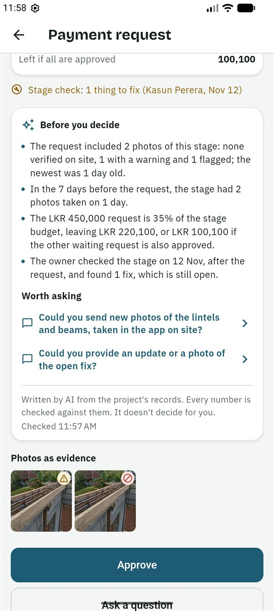

SiteProof
SiteProofGuides › Owner
Guide for owners
සිංහලෙන් කියවන්න (Read in Sinhala)
This guide is for the owner of a SiteProof project: the person building the house. You see everything in the project, decide on every payment and choose who joins. Many owners live abroad and follow the build on their phone.
What you can and can't do
You can
- See everything: updates and photos, the budget, every bill and payment request, the payment schedule, changes to the work, drawings and documents.
- Approve, ask a question about or reject a payment request, and mark it paid.
- Ask for a live check: a new photo from site, now.
- Edit the project, its stages and budgets, and start and finish stages.
- Check a stage on site and sign it off.
- Post updates, add bills, add drawings and documents, and remove any document.
- Invite and remove people, and hand the project over.
- Choose the plan and pay for it.
Others do these
- Ask for a payment: the family member on site or the contractor asks, and you decide.
- Confirm a new drawing is seen: the contractor and the family member on site do it, so nobody builds from an old drawing.
- Propose stages from a quote: the contractor or the designer sends them, and you approve.
- Set the site location: the person on site does it, unless you chose Me for Who is on site?.
Getting started
Sign in
- Install SiteProof from Google Play. While SiteProof is being tested, only invited testers can install it. It is for Android phones for now.
- Choose සිංහල or English. You can change it later in Settings.
- Read the short welcome, or tap Skip.
- Type your email address and tap Send code. Type the 6-digit code from the email and tap Verify. Or tap Continue with Google. There is no password.
- Under About you, fill in Your name and the Country you live in, then tap Continue. If you like, first tap Add a photo at the top: Take a photo or Choose from your photos, move and zoom it so your face is in the circle, and tap Use photo. Only the people in your projects see it, and you can change or remove it later in Settings.
Start your project
- On the home screen (Your projects), tap New project.
- Under Who is this project for?, choose My own house.
- Fill in the Project name, the District and the Type of work: House, Extension, Renovation or repair, Boundary wall or Other.
- Choose Who is on site?: A family member, Only the contractor or Me. This decides who sets the site location. With Only the contractor, the contractor's photos are the only evidence, so the app suggests a live check before payments.
- For a house, choose the Floors and the Roof, and add the Floor area (sq ft) if you know it.
- For a house, an extension, a bathroom or a kitchen, choose the Finish level: Basic, Standard or Premium. Each shows what it means for that job, because how it's finished changes the cost a lot. Roof repairs, boundary walls and other jobs aren't asked.
- Choose the Contract type (Labour only, Full contract or Mixed) and fill in the Total budget (LKR), the Start date and the Target end date.
- If you like, switch on Share this project's costs anonymously, to help other families see what houses like theirs cost. Only the costs are used, mixed with other houses: never your name, photos, bills or the site's location. It's off unless you switch it on, and you can change it later in the project's settings.
- Tap Create project. The stages are filled in from a Sri Lankan template for your kind of house. You can change them on the Stages tab.
- Invite the family member on site or the contractor: see Your team.
Find your project
Your projects are on the home screen. If you are in projects in different roles, they are grouped: Your homes (yours, and ones you co-own), Your work (as contractor or designer) and Following (as family member on site or viewer). Projects with something waiting for you come first. A card shows the stage, when the last photo came in and what is waiting, but never money. Your project opens on the Overview.

Follow the build
The Overview
- Open the project. At the top is the latest photo verified on site.
- Your week (Plus): every Monday at 7 am in your time zone, a few lines about last week: what progressed, the photos and their checks, the money this week and to date, and what is waiting for you. It is written by AI from the project's records, and every number is checked against them.
- The tiles show the Stage, what is Spent of the budget, the Team and how long you have been Building.
- Needs your attention lists what waits for you: payment requests, changes to the work, a site location to confirm, a stage plan to review. Tap a line to go there.
- Further down: Watch your home rise (a time-lapse, once photos have been lined up from the same spot; tap Share to send it as a short video), Latest photos, Site activity (a square for each day of the last 12 weeks, with an amber note when no photo has come in for three days while a stage is under way) and Who's on site, with Call and WhatsApp buttons.

Updates and photos
- Open Updates. The newest update is first. Tap a stage chip to see only that stage, or All stages.
- Each photo has a badge: Verified on site, Warning or Flagged. Tap the badge, then What does this mean?, for the reason in plain words. See The photo badges.
- Tap Seen 👍 on an update, so the person on site knows you looked.
- Tap a photo to see it full screen. Ask about this photo starts a comment asking for a new photo from the same place.
- Tap Compare to see the photo next to the earlier one from the same spot. Drag the line between Then and Now.
- Some updates have a voice note: tap play to hear it. With Plus, it is also written out and translated into English or Sinhala, marked as written by AI.
- To answer or ask about an update, tap Comment.

Ask for a live check
When you want to see the work as it is right now, for example before a big payment:
- On Updates, under Live checks, tap Ask for a live check.
- Choose Who should take the photos? and write What to show, for example "The slab steel from the north corner, with a tape measure".
- Choose By when: Within 1 hour, Within 3 hours or By 6:30 PM in Sri Lanka. The screen shows the time on site, and warns when it may be dark there.
- Before a big payment, tick Also ask for a code on paper. They write a 4-digit code from SiteProof on paper and show it in a photo, so it can't be an old photo. Check that the code is in the photo: the app doesn't read it.
- Tap Ask now. They get a notification straight away.
The check is Completed only by a photo taken in the app after you asked, with signal, that reaches SiteProof before the deadline. Otherwise it shows Not completed in time. You can cancel an open check; the person is told.
Money
- Open Money. Payment requests waiting for you are at the top. See all payments lists every request, with the totals per payee.
- The budget card shows what is left as one big number (red when over budget), then Budget, Bills and Paid for the Whole project, and the Budget by stage.
- "Spent" means the bills paid by you or your family, plus the payments marked paid. The contractor's own bills are shown but not counted again: the contractor is paid back for them through payment requests.
- With a payment schedule, Your budget in two parts shows The contract (what you owe the builder) and Everything else (materials you buy, other workers, fees). The stage budgets cover only everything else. An agreed payment is shown on its stage's row but checked against the contract, so paying it never puts a stage over its budget. If the stage budgets don't add up to everything else, tap Split the rest.
- Further down: the Payment schedule, Changes to the work, Spending over time (with a forecast once a stage with a budget is finished), Where the money goes, Prices on the bills (for example per bag of cement or per cube of sand) and the Bills: the ones with a question and the latest five. See all shows every bill by month, with what each month adds up to; tap a stage to see only its bills, or search for an item or a shop.
- To ask about a bill, open it, tap ⋮ → Query this bill and type your question. The person who added it is told. The bill stays marked Queried until you tap Clear the query.

Set the payment schedule (Plus)
The payment schedule is the list of payments agreed in the contract, such as "10% advance", "25% after the foundation" and "balance on handover". With it, each payment request is checked against the agreed payment it is for. You or a co-owner set it.
- Add the contract on Files, with the type Contract or quotation.
- On Money, under Payment schedule, tap Read it from the contract (AI reads the contractor's name, the total and the payments) or Type it in.
- Check every payment against the contract: its name, the %, the Amount (LKR) and Paid after (stage). The app warns when the percentages or amounts don't add up.
- Tap Save the schedule. Nothing is saved before that.
The contractor and the family member on site see the schedule. When they ask for a payment, they choose which agreed payment it is For.
Decide on a change to the work (Plus)
When the work changes from what was agreed (a wider lintel, better tiles, rock under the foundation), the person on site records it with its cost or saving, the extra days and photos.
- Open the change from Needs your attention, or from Money → Changes to the work.
- Tap Approve, Ask a question or Decline.
- Approving raises the stage's budget and the total budget by its cost. With a payment schedule, it becomes one more agreed payment instead. Leave Move the plan by … days ticked to move this stage's end, every later stage and the target end date.
A change you agreed in person: tap Record a change yourself. It is approved at once.
Decide on a payment request
Nothing is paid until you or a co-owner say yes. SiteProof doesn't send money: you pay through your bank, then record it.
- A notification says, for example, "Sunil asks for LKR 450,000 for Foundation". Tap it, or open the request from Money or Needs your attention.
- Read the money box: Stage budget, Your bills on this stage, Already paid on this stage, Approved, not paid yet, This request and Left after this. When other requests on the stage are waiting too, Left if all are approved shows what would be left (red when that is over the budget).
- For an agreed payment from the schedule, the box shows The contract, Paid towards the contract and Left of the contract after it, and says whether this request leaves some of the agreed payment, is the rest of it, or goes over it (in red).
- Read Before you decide (Plus): a few lines on the photos that came with the request and their checks, the stage's recent photos, its budget, the earlier payments on it and its stage check, with up to three questions under Worth asking. Tap a question to ask it. It is written by AI from the project's records, every number is checked against them, and it doesn't decide for you.
- Look at the Photos as evidence and their badges, and at the stage check line, such as "Stage check: signed off by …" or "1 thing to fix".
- Decide:
- Approve: confirm, then pay through your bank. The family member on site is told there is a payment to make.
- Ask a question: the request keeps waiting, marked, and the answer comes as a comment.
- Reject: give a Reason. The person who asked is told straight away.
- After paying, open the request, tap Mark as paid, and add the Bank reference, a Photo of the slip, or both. If the family member on site paid, they can mark it paid instead.
If Only the contractor is on site, the request reminds you that their photos are the only evidence. For a large payment, ask for a live check first.

Stages and stage checks
- On Stages, the stages are shown as a timeline. Tap one to open it: its status and dates, its budget and what is Left, its stage check, photos, bills and payment requests.
- Tap Start this stage or Mark this stage as finished. A stage shows Awaiting approval while a payment request on it waits.
- To change the plan: on a stage, tap ⋮ (Change status or edit); on the Stages tab, tap Add a stage, or hold and drag a stage to change the order. Split my budget for me fills each stage budget with a typical share of your total, as a rough guide, not a quote. A stage with photos, bills or payments can't be deleted; rename it instead.
- Plan the stage dates spreads the stages from the start date to the target end date. The Schedule chart then shows the plan against what really happened, and whether the build is behind or ahead.
- A contractor's or designer's proposal from their quote shows in Needs your attention ("Review the stage proposal from …"). Tap Review to see each proposed stage next to its current name and budget, and which stages are new, removed or kept. Then Approve, Ask a question or Decline.
Check a stage
Key stages (the foundation, DPC, lintels and beams, slabs, roof, wiring and plumbing, before plastering) have a short checklist. Your designer checks them on site; you can too.
- Open the stage. On Stage check, tap Check this stage (Sign off this stage on a stage with no checklist).
- Mark each point OK, Fix (and say what needs fixing) or Not checked. Add Anything else to fix.
- Tap Sign off the stage, or Send … things to fix. You can add photos of what you checked.
- The contractor and the family member on site mark each point fixed, with photos. When all are fixed, you are asked to Check again.
The checklists are drafts until an engineer has reviewed them. A stage check is a record, never a gate: it shows on the stage and on its payment requests.

Your team and the site location
Invite someone
- Open Team and tap Invite someone.
- Choose the role: Family member on site, Contractor, Designer, Viewer or Co-owner. Each says what that person can do.
- If you like, type a Name to show (optional), such as "Sunil baas" or "Amma".
- Tap Create and share and send it on WhatsApp. The message, in Sinhala and English, has a 6-character code. It works once, for 7 days.
- Codes not used yet are under Invites not used yet: Share again or Cancel invite.
- Tap a person to Change the name shown, Remove from project (their access stops straight away; their past photos and posts stay) or Make owner.
- Designer can see the budget is off unless you turn it on. Contractors and viewers never see it.
- Make owner hands the project over to a co-owner, the family member on site or a viewer (not the contractor or designer). You become a co-owner.
Confirm the site location
Photos are checked against the site location. The person on site sets it while standing on the plot, and you are asked to check it.
- Tap Check and confirm the site location in Needs your attention, or open Site.
- Tap Check it in Google Maps to see the pin.
- Set Photos count as on site within (150 m to start with).
- Tap Confirm the site.
Until it is confirmed, photos show a warning: "The site location isn't confirmed yet". If you chose Me for Who is on site?, you set it yourself: stand in the middle of the plot, open Site and tap I'm at the house site now.
Settings and reports
- Settings: on the home screen, tap your photo or initials at the top (or ⋮ → Settings). There you find your photo, name and country (tap Edit to change them), the language, Notification settings, Security (Lock with fingerprint or PIN), your Plan, Help, Download my data, Sign out and Delete my account.
- On hold, finished or stopped: open the project, tap the gear for Project settings; Project status is at the top. Put on hold when work stops for a while (add when it should restart and why, if you like): the team is told, and the app stops warning that no photos came in. Mark as finished when the house is done (the Overview also offers it once every stage is done); late bills and the last payment can still go in, and you can make the final report. Stop the project if the build won't go on. Nothing is deleted, and you or a co-owner can undo each one. While it's on hold, finished or stopped, stages can't start and you can't ask for live checks; once it's finished or stopped, stage plans and changes to the work can't be sent or approved (you can still decline them). A payment request that comes while it's on hold or after it's stopped says so.
- Notifications: new photos and bills come As they happen, or Once a day, at a time you choose. Payment requests, decisions and replies always come straight away. The bell lists every notification, including ones you missed. Reminders: when a payment request has waited 3 days for your decision, you get a reminder at 7 PM your time (at most twice). Turn them off with Send me reminders.
- Reports (Plus): tap the PDF icon at the top of the project (Make a report), then this month, last month or One stage, for a bank loan. It opens the share sheet, to send on WhatsApp or email, save to Drive or print.
Good to know
Who sees what
- Only the people in your project see anything of it.
- The budget, every bill and every payment request: you, co-owners and the family member on site. The designer only if you allow it. A contractor sees only their own bills and requests, never your budget. Viewers never see money.
- Your week and Before you decide are for owners and co-owners only, never the person who asked for the payment.
- Everyone in the team sees the photos, the site location, the stages, stage checks, comments and documents. Viewers don't see the contract.
- Changes to the work, with their cost, are seen by everyone except viewers.
- People see each other's name and role, and the phone number of anyone who signed in with one.
- The cards on the home screen never show money.
The photo badges
Photos can only be taken with the SiteProof camera, not picked from the gallery. The time comes from SiteProof's server, not from the phone.
- Verified on site: taken inside the site's circle (usually 150 m) and uploaded soon after.
- Warning: something couldn't be fully checked. For example: the site location isn't confirmed yet, the GPS was weak, the photo was taken a little outside the circle, it was uploaded more than a day later, it looks the same as an earlier photo of this house, or (Plus) it may be a photo of a screen or printout. There is often an honest reason. Ask, or ask for a live check.
- Flagged: taken more than 1 km from the site, with a simulated location, the same photo posted before, or it looks the same as a photo on another project.
- "Captured offline, uploaded 3 h later": taken without signal. The time and place are from when it was taken.
Badges make faking harder and easy to spot, but they can't prove the quality of the work. For important stages, ask for a new photo or visit.
Plans
- Only the owner pays. Family, contractors and everyone else use SiteProof free.
- For now, while SiteProof is being tested, every project has Plus free: Settings → Plan says "Plus, free for now".
- Later, each new project gets Plus free for its first 30 days, then you choose a plan. The Free plan has 1 open project, up to 3 people in it and 30 photos a month. Bills, payment requests, live checks, documents and drawings, and everything marked (Plus) in this guide need Plus. Nothing is ever deleted.
- Fill in from the photo (AI reads a bill photo) works 10 times a month on Free, 100 on Plus.
Help and your account
Settings → Help: questions and answers, chat with us on WhatsApp, or report a problem. If SiteProof helps your family, Rate SiteProof there takes you to Google Play: a rating means a lot to us. To delete your account, first hand over any project that other people are in: see Delete your account.